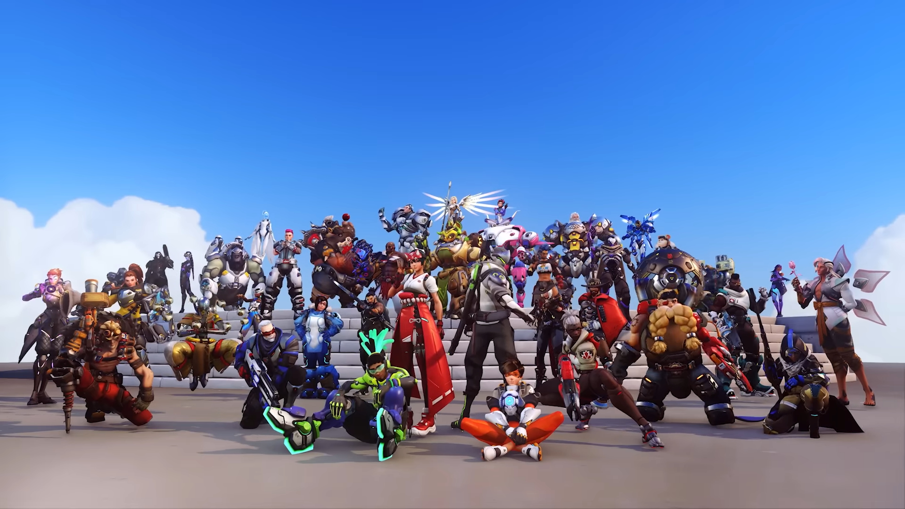

Se sitúa en un futuro cercano, unos 60 años en el futuro, después de un evento global llamado la "Crisis Ómnica". Los ómnicos son robots con inteligencia artificial avanzada que fueron creados para ayudar a la humanidad, pero una crisis llevó a una rebelión de estas máquinas en todo el mundo, poniendo en peligro la existencia humana.
Con el tiempo, sin embargo, Overwatch comenzó a sufrir escándalos, corrupción y conflictos internos. Estos problemas, junto con una serie de incidentes y críticas públicas, llevaron a la eventual disolución de la organización. Aunque disuelto oficialmente, algunos de los miembros de Overwatch continuaron sus actividades heroicas por su cuenta.
En el tiempo presente del juego, una nueva amenaza emerge, lo que lleva a la reactivación de algunos de los antiguos miembros de Overwatch y la incorporación de nuevos héroes para enfrentar este peligro. Los jugadores, al tomar el control de estos héroes, participan en batallas por todo el mundo, con mapas y modos de juego que reflejan la historia de este universo.
